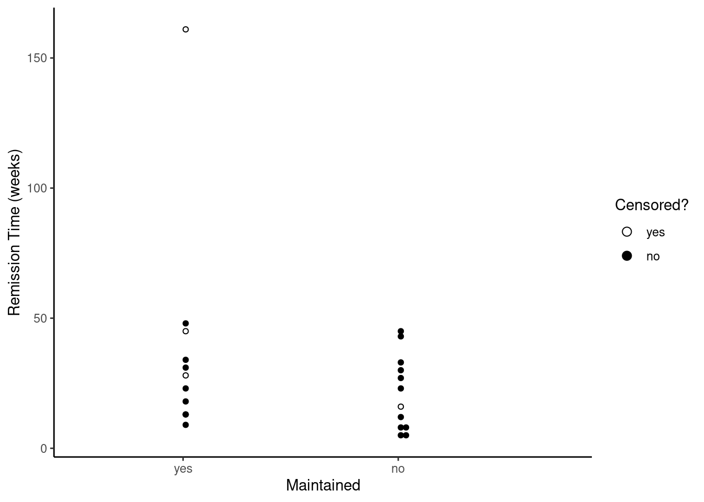
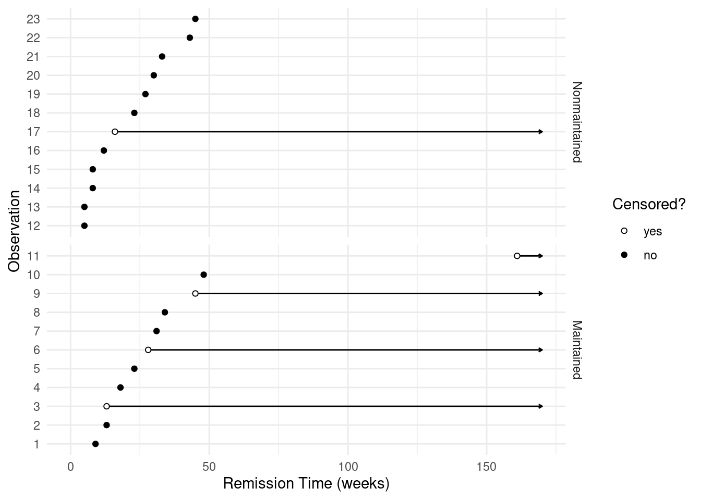
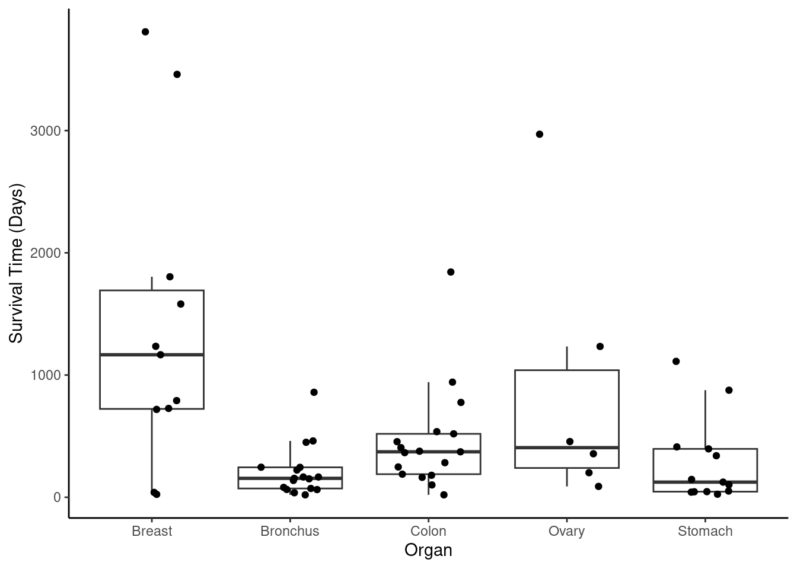
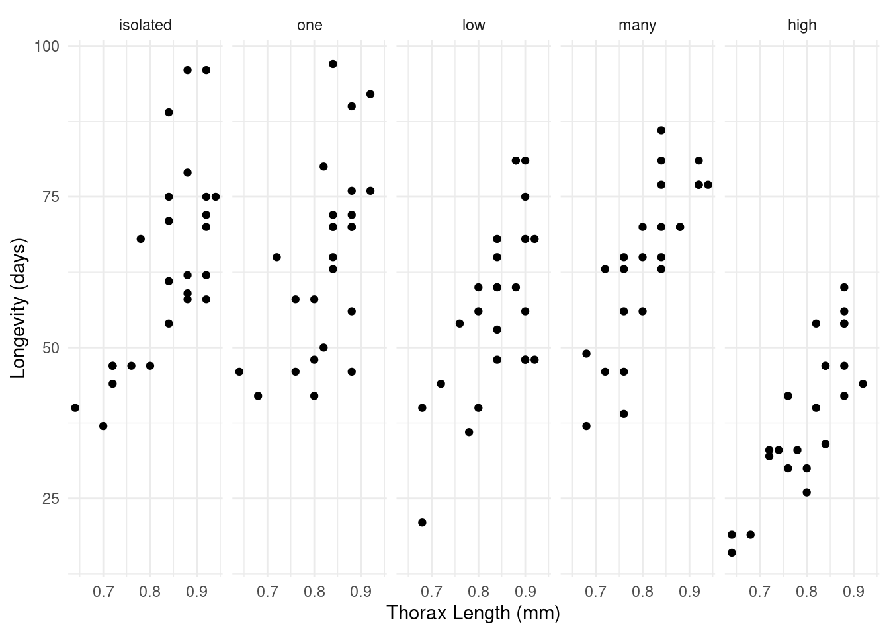
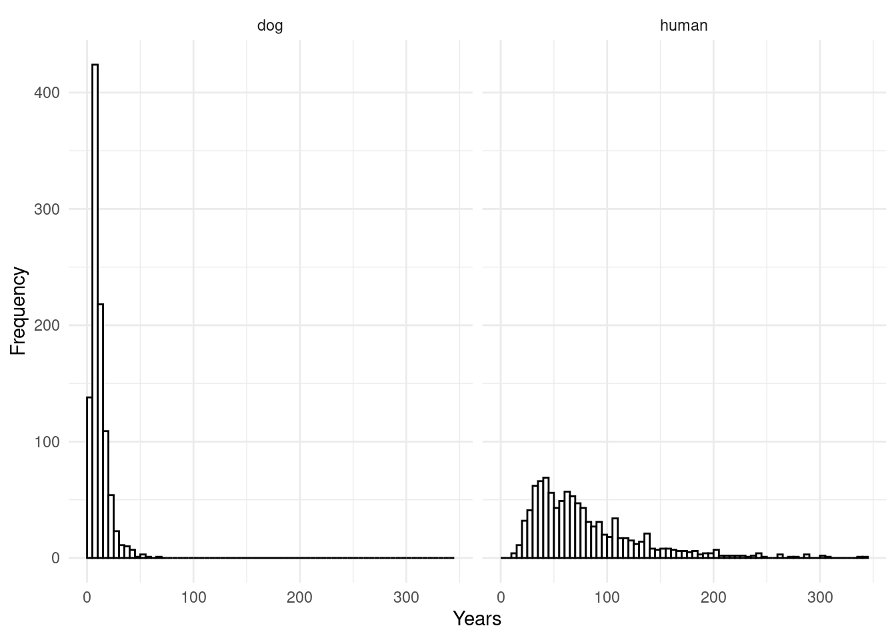

Wednesday, Apr 5
You can also download a PDF copy of this lecture.
Survival Analysis
In survival analysis the response variable is time-till-event defined as \[ T_i = T_i^{(E)} - T_i^{(0)} \ge 0, \] where \(T_i^{(0)}\) is the starting time and \(T_i^{(E)}\) is the time of the event, so that \(T_i\) is the time-till-event.
Issues with modeling time-to-event:
Distribution of \(T_i\) tends to be right-skewed and heteroscedastic with the variance increasing with \(E(T_i)\).
Times may be censored. Right-censoring and interval-censoring are particularly common.
Time-varying covariates. Explanatory variables may change values over time.
Censored Observations
Censoring of a variable occurs when we only know that the response variable is within a set or range of values. Common types of censoring are right-censoring, left-censoring, and interval-censoring.
Right-Censoring: We only know that \(T > c\) for some constant \(c\). This is very common in survival analysis. It often occurs when the event has not yet happened when observations are stopped, or when the researchers lose track of an observation unit.
Left-Censoring: We only know that \(T < c\) for some constant \(c\). This may happen because the event had already happened prior to when we started observation.
Interval-Censoring: We only know that \(a < T < b\) for some constants \(a < b\). Note that right-censoring can be viewed as a special case where \(b = \infty\) and left-censoring can be viewed as a special case where \(a = 0\). Interval censoring occurs in survival analysis when units are only periodically observed.
Note that censoring can occur for variables other than time to event. Example: Consider the following data from a study of the effect of normal versus extended chemotherapy on the survival of patients with acute myelogenous leukemia.
library(survival)
leukemia$censored <- factor(leukemia$status, levels = c(0,1),
labels = c("yes","no")) # right-censored?
leukemia time status x censored
1 9 1 Maintained no
2 13 1 Maintained no
3 13 0 Maintained yes
4 18 1 Maintained no
5 23 1 Maintained no
6 28 0 Maintained yes
7 31 1 Maintained no
8 34 1 Maintained no
9 45 0 Maintained yes
10 48 1 Maintained no
11 161 0 Maintained yes
12 5 1 Nonmaintained no
13 5 1 Nonmaintained no
14 8 1 Nonmaintained no
15 8 1 Nonmaintained no
16 12 1 Nonmaintained no
17 16 0 Nonmaintained yes
18 23 1 Nonmaintained no
19 27 1 Nonmaintained no
20 30 1 Nonmaintained no
21 33 1 Nonmaintained no
22 43 1 Nonmaintained no
23 45 1 Nonmaintained no  Example: Consider the following data from a study on the effect of temperature on the operational time of motors.
library(MASS)
head(motors) # note: cens = 0 if observation IS censored temp time cens
1 150 8064 0
2 150 8064 0
3 150 8064 0
4 150 8064 0
5 150 8064 0
6 150 8064 0tail(motors) temp time cens
35 220 504 1
36 220 528 0
37 220 528 0
38 220 528 0
39 220 528 0
40 220 528 0
Approaches to Modeling of Survival Data
Most regression models for continuous survival time can be classified as follows.
Parametric models. A specific distribution is assumed/specified for \(T_i\). One or more parameters of the distribution can then be a function of one or more explanatory variables. Examples include accelerated failure time models, parametric proportional hazards models, and parametric proportional odds models.
Semi-parametric models. A specific distribution is not assumed/specified for \(T_i\), but certain relationships between the properties of the distribution and one or more explanatory variables are assumed. Examples include semi-parametric (Cox) proportional hazards models, and semi-parametric proportional odds models.
Non-parametric methods. No or negligible assumptions, but largely limited to categorical explanatory variables.
We will also discuss discrete survival models where time is either divided into consecutive intervals of time, or we are modeling progression through discrete stages.
Accelerated Failure Time (AFT) Model
An accelerated failure time model can be written as \[ \log T_i = \beta_0 + \beta_1 x_{i1} + \beta_2 x_{i2} + \cdots + \beta_k x_{ik} + \sigma\epsilon_i, \] where \(\sigma\) is a scale parameter that determines the variability of \(\log T_i\). This can also be written as \[ T_i = e^{\beta_0}e^{\beta_1x_{i1}}e^{\beta_2x_{i2}} \cdots e^{\beta_kx_{ik}}e^{\sigma\epsilon_i}. \] To complete the model specification we assume a distribution for \(T_i\) (which implies a distribution for \(\epsilon_i\)), or a distribution for \(\epsilon_i\) (which implies a distribution for \(T_i\)).
Note that a AFT is essentially a linear model where the response variable is \(Y_i = \log T_i\) is a transformation of \(T_i\). This is not the same as a GLM using a log link function. That would be \[ \log E(T_i) = \beta_0 + \beta_1 x_{i1} + \beta_2 x_{i2} + \cdots + \beta_k x_{ik}. \] However in practice the two kinds of models can produce similar results.
Example: Consider the following data on survival time after administration of ascorbate.
library(Stat2Data)
data(CancerSurvival)
p <- ggplot(CancerSurvival, aes(x = Organ, y = Survival)) +
geom_boxplot(outlier.shape = NA) +
geom_jitter(width = 0.25, height = 0) +
ylab("Survival Time (Days)") +
theme_classic()
plot(p) Suppose we assume that \(\log T_i\) has a normal distribution. Then we can estimate an AFT as follows.
m <- lm(log(Survival) ~ Organ, data = CancerSurvival)
summary(m)
Call:
lm(formula = log(Survival) ~ Organ, data = CancerSurvival)
Residuals:
Min 1Q Median 3Q Max
-3.381 -0.661 0.102 0.821 2.046
Coefficients:
Estimate Std. Error t value Pr(>|t|)
(Intercept) 6.559 0.360 18.20 < 2e-16 ***
OrganBronchus -1.605 0.462 -3.47 0.00097 ***
OrganColon -0.809 0.462 -1.75 0.08525 .
OrganOvary -0.408 0.607 -0.67 0.50380
OrganStomach -1.591 0.490 -3.25 0.00191 **
---
Signif. codes: 0 '***' 0.001 '**' 0.01 '*' 0.05 '.' 0.1 ' ' 1
Residual standard error: 1.2 on 59 degrees of freedom
Multiple R-squared: 0.225, Adjusted R-squared: 0.173
F-statistic: 4.29 on 4 and 59 DF, p-value: 0.00412Here the residual standard error is the estimate of
\(\sigma\), computed as \[
\hat\sigma = \sqrt{\frac{\sum_{i=1}^n (y_i - \hat{y}_i)^2}{n-k-1}},
\] where \(\hat{y}_i = \hat\beta_0 +
\hat\beta_1x_{i1} + \cdots + \hat\beta_kx_{ik}\).
Other functions for estimating an AFT model are survreg
from the survival package and flexsurvreg
from the flexsurv package. In both cases the
distribution of \(T_i\) is specified as
log-normal (a random variable \(Y_i\) has a log-normal distribution if its
logarithm has a normal distribution).
library(survival)
m <- survreg(Surv(Survival) ~ Organ, dist = "lognormal", data = CancerSurvival)
summary(m)
Call:
survreg(formula = Surv(Survival) ~ Organ, data = CancerSurvival,
dist = "lognormal")
Value Std. Error z p
(Intercept) 6.5586 0.3460 18.96 < 2e-16
OrganBronchus -1.6054 0.4440 -3.62 0.00030
OrganColon -0.8095 0.4440 -1.82 0.06829
OrganOvary -0.4080 0.5824 -0.70 0.48357
OrganStomach -1.5907 0.4701 -3.38 0.00071
Log(scale) 0.1376 0.0884 1.56 0.11961
Scale= 1.15
Log Normal distribution
Loglik(model)= -455.2 Loglik(intercept only)= -463.3
Chisq= 16.33 on 4 degrees of freedom, p= 0.0026
Number of Newton-Raphson Iterations: 4
n= 64 confint(m) 2.5 % 97.5 %
(Intercept) 5.880 7.23671
OrganBronchus -2.476 -0.73517
OrganColon -1.680 0.06078
OrganOvary -1.549 0.73343
OrganStomach -2.512 -0.66932Note the use of the function Surv to define the response
variable. This is necessary to communicate any censoring to the function
(although here there is no censoring). Note also that the
Scale is the estimate of scale parameter \(\sigma\). The reason why it is different
from what was obtained form lm is that it is a maximum
likelihood estimate computed as \[
\hat\sigma = \sqrt{\frac{\sum_{i=1}^n (y_i - \hat{y}_i)^2}{n}}.
\] Using flexsurvreg produces comparable
results.
library(flexsurv)
m <- flexsurvreg(Surv(Survival) ~ Organ, dist = "lognormal", data = CancerSurvival)
print(m) # summary behaves differently for flexsurvreg objects --- use print insteadCall:
flexsurvreg(formula = Surv(Survival) ~ Organ, data = CancerSurvival,
dist = "lognormal")
Estimates:
data mean est L95% U95% se exp(est) L95% U95%
meanlog NA 6.5586 5.8805 7.2367 0.3460 NA NA NA
sdlog NA 1.1475 0.9650 1.3645 0.1014 NA NA NA
OrganBronchus 0.2656 -1.6054 -2.4757 -0.7352 0.4440 0.2008 0.0841 0.4794
OrganColon 0.2656 -0.8095 -1.6797 0.0608 0.4440 0.4451 0.1864 1.0627
OrganOvary 0.0938 -0.4080 -1.5494 0.7334 0.5824 0.6650 0.2124 2.0822
OrganStomach 0.2031 -1.5907 -2.5120 -0.6693 0.4701 0.2038 0.0811 0.5121
N = 64, Events: 64, Censored: 0
Total time at risk: 35752
Log-likelihood = -455.2, df = 6
AIC = 922.4Here sdlog corresponds to the scale parameter \(\sigma\), and meanlog
corresponds to \(\beta_0\). The
est column gives the estimates of \(\beta_1, \beta_2, \dots, \beta_k\). The
se column is the standard error of each estimator, and the
first set of columns L95% and U95% give the
confidence interval of each parameter.
Note that we can obtain the same estimates (although slightly different standard errors) using a linear model for \(\log T_i\).
Interpretation of Model Parameters in AFT Models
Recall that with an AFT model we can write time-till-event as \[ T = e^{\beta_0} e^{\beta_1 x_{1}} e^{\beta_2 x_{2}} \cdots e^{\beta_k x_k} e^{\sigma \epsilon}. \] We can interpret parameters and linear combinations thereof by applying the exponential function in much the same way as we do with a GLM that has a log link function.
Quantitative Explanatory Variable
Let \[ T_b = e^{\beta_0} e^{\beta_1 x_{1}} e^{\beta_2 x_{2}} \cdots e^{\beta_k x_k} e^{\sigma \epsilon} \] be time-till-event at given values of the explanatory variables. If we increase \(x_1\) by one unit to \(x_1 + 1\) then we get \[ T_a = e^{\beta_0} e^{\beta_1 (x_{1}+1)} e^{\beta_2 x_{2}} \cdots e^{\beta_p x_{p}} e^{\sigma \epsilon} = e^{\beta_1}\underbrace{e^{\beta_0} e^{\beta_1 x_{1}} e^{\beta_2 x_{2}} \cdots e^{\beta_p x_{p}} e^{\sigma \epsilon}}_{T_b}, \] so \(T_a/T_b = e^{\beta_1}\) and \(T_a = e^{\beta_1}T_b\).
If \(\beta_1 < 0\) then \(e^{\beta_1} < 1\) and increasing \(x_1\) will “compress” time-till-event (i.e., “accelerate the passage through time”) by a factor of \(e^{\beta_1}\). We could also say that increasing \(x_1\) by one unit reduces time-till-event by a factor of \(e^{\beta_1}\), or by \((1 - e^{\beta_1}) \times 100\%\).
If \(\beta_1 > 0\) then \(e^{\beta_1} > 1\) and increasing \(x_1\) will “stretch” time-till-event (i.e., “decelerate the passage through time”) by a factor of \(e^{\beta_1}\). We could also say that increasing \(x_1\) by one unit increases time-till-event by a factor of \(e^{\beta_1}\), or by \((e^{\beta_1} - 1) \times 100\%\). Also note that \[ E(T_b) = e^{\beta_0} e^{\beta_1 x_{1}} e^{\beta_2 x_{2}} \cdots e^{\beta_k x_k} E(e^{\sigma \epsilon}), \] and \[ E(T_a) = e^{\beta_0} e^{\beta_1 (x_{1} +1)} e^{\beta_2 x_{2}} \cdots e^{\beta_p x_{p}} E(e^{\sigma \epsilon}) = e^{\beta_1}\underbrace{e^{\beta_0} e^{\beta_1 x_{1}} e^{\beta_2 x_{2}} \cdots e^{\beta_p x_{p}} E(e^{\sigma \epsilon})}_{E(T_b)}, \] so we can interpret \(e^{\beta_1}\) in the same way that we do for GLMs with a log link function in terms of what happens to the expected time-till-event.
Example: Consider the following data from a study of the longevity of male fruit flies in five experimental conditions.
library(faraway)
p <- ggplot(fruitfly, aes(x = thorax, y = longevity)) +
geom_point() + facet_wrap(~ activity, ncol = 5) +
labs(x = "Thorax Length (mm)", y = "Longevity (days)") +
theme_minimal()
plot(p)
m <- survreg(Surv(longevity) ~ activity + thorax, dist = "lognormal", data = fruitfly)
summary(m)$table Value Std. Error z p
(Intercept) 1.84421 0.19395 9.5088 1.929e-21
activityone 0.05174 0.05334 0.9701 3.320e-01
activitylow -0.12387 0.05329 -2.3245 2.010e-02
activitymany 0.08791 0.05410 1.6248 1.042e-01
activityhigh -0.41925 0.05391 -7.7765 7.455e-15
thorax 2.72146 0.22758 11.9585 5.861e-33
Log(scale) -1.66921 0.06350 -26.2867 2.721e-152exp(cbind(coef(m), confint(m))) 2.5 % 97.5 %
(Intercept) 6.3231 4.3236 9.2474
activityone 1.0531 0.9486 1.1692
activitylow 0.8835 0.7959 0.9808
activitymany 1.0919 0.9820 1.2140
activityhigh 0.6575 0.5916 0.7308
thorax 15.2025 9.7320 23.7480m <- flexsurvreg(Surv(longevity) ~ activity + thorax, dist = "lognormal", data = fruitfly)
print(m)Call:
flexsurvreg(formula = Surv(longevity) ~ activity + thorax, data = fruitfly,
dist = "lognormal")
Estimates:
data mean est L95% U95% se exp(est) L95% U95%
meanlog NA 1.8442 1.4641 2.2243 0.1939 NA NA NA
sdlog NA 0.1884 0.1663 0.2134 0.0120 NA NA NA
activityone 0.2016 0.0517 -0.0528 0.1563 0.0533 1.0531 0.9486 1.1692
activitylow 0.2016 -0.1239 -0.2283 -0.0194 0.0533 0.8835 0.7959 0.9808
activitymany 0.1935 0.0879 -0.0181 0.1940 0.0541 1.0919 0.9820 1.2140
activityhigh 0.2016 -0.4193 -0.5249 -0.3136 0.0539 0.6575 0.5916 0.7308
thorax 0.8224 2.7215 2.2754 3.1675 0.2276 15.2025 9.7320 23.7480
N = 124, Events: 124, Censored: 0
Total time at risk: 7145
Log-likelihood = -465, df = 7
AIC = 944A 1mm increase in thorax length is huge. How about a 0.1 mm increase in thorax length? We can do this by changing the units to tenths of a mm. One mm is ten tenths of a mm so multiplying length by 10 will put the units into tenths of a mm.
m <- flexsurvreg(Surv(longevity) ~ activity + I(thorax*10), dist = "lognormal", data = fruitfly)
print(m)Call:
flexsurvreg(formula = Surv(longevity) ~ activity + I(thorax *
10), data = fruitfly, dist = "lognormal")
Estimates:
data mean est L95% U95% se exp(est) L95% U95%
meanlog NA 1.8442 1.4641 2.2243 0.1939 NA NA NA
sdlog NA 0.1884 0.1663 0.2134 0.0120 NA NA NA
activityone 0.2016 0.0517 -0.0528 0.1563 0.0533 1.0531 0.9486 1.1692
activitylow 0.2016 -0.1239 -0.2283 -0.0194 0.0533 0.8835 0.7959 0.9808
activitymany 0.1935 0.0879 -0.0181 0.1940 0.0541 1.0919 0.9820 1.2140
activityhigh 0.2016 -0.4193 -0.5249 -0.3136 0.0539 0.6575 0.5916 0.7308
I(thorax * 10) 8.2242 0.2721 0.2275 0.3167 0.0228 1.3128 1.2555 1.3727
N = 124, Events: 124, Censored: 0
Total time at risk: 7145
Log-likelihood = -465, df = 7
AIC = 944Example: Consider a AFT for the motors
data.
m <- survreg(Surv(time, cens) ~ temp, dist = "lognormal", data = motors)
summary(m)$table Value Std. Error z p
(Intercept) 16.49155 0.929144 17.749 1.749e-70
temp -0.04654 0.004853 -9.589 8.866e-22
Log(scale) -0.46838 0.184519 -2.538 1.114e-02exp(cbind(coef(m), confint(m))) 2.5 % 97.5 %
(Intercept) 1.453e+07 2.351e+06 8.976e+07
temp 9.545e-01 9.455e-01 9.636e-01Note: We will discuss the specification of the censoring in the next lecture.
Categorical Explanatory Variable
Suppose that \(x_1\) is an indicator variable such that \(x_1 = 1\) at a level \(a\), and \(x_1 = 0\) at the reference level \(b\). Then we have that \[ T_a = e^{\beta_0} e^{\beta_1 x_{1}} e^{\beta_2 x_{2}} \cdots e^{\beta_k x_{k}} e^{\sigma \epsilon} \ \ \ \text{and} \ \ \ T_b = e^{\beta_0} e^{\beta_2 x_{2}} \cdots e^{\beta_k x_{k}} e^{\sigma \epsilon}, \] noting that if \(x_1 = 1\) then \(e^{\beta_1 x_1} = e^{\beta_1}\) and if \(x_1 = 0\) then \(e^{\beta_1 x_1} = 1\). So \[ \frac{T_a}{T_b} = \frac{e^{\beta_0} e^{\beta_1 x_{1}} e^{\beta_2 x_{2}} \cdots e^{\beta_k x_{k}} e^{\sigma \epsilon}}{e^{\beta_0} e^{\beta_2 x_{2}} \cdots e^{\beta_k x_{k}} e^{\sigma \epsilon}} = e^{\beta_1}. \] Similarly, \(T_b/T_a = 1/e^{\beta_1} = e^{-\beta_1}\).
If \(\beta_1 < 0\) then \(e^{\beta_1} < 1\) and so the time-till-event at level \(a\) is “compressed” (accelerated) relative to that at level \(b\) by a factor of \(e^{\beta_1}\) (i.e., progression to the event is faster at level \(a\) than at level \(b\) by a factor of \(e^{\beta}_1\)). We could also say that time-till-event at level \(a\) is \((1-e^{\beta_1}) \times 100\%\) that of time-till-event at level \(b\), or that time-till-event at level \(b\) is \((e^{\beta}_1-1) \times 100\%\) that of time-till-event at level \(a\).
If \(\beta_1 > 0\) then \(e^{\beta_1} > 1\) and so the time-till-event at level \(a\) is “stretched” (decelerated) relative to that at level \(b\) by a factor of \(e^{\beta_1}\) (i.e., progression to the event is slower at level \(a\) than at level \(b\) by a factor of \(e^{\beta_1}\)). We could also say that time-till-event at level \(a\) is \((e^{\beta_1}-1) \times 100\%\) that of time-till-event at level \(b\), or that time-till-event at level \(b\) is \((1-e^{\beta}_1) \times 100\%\) that of time-till-event at level \(a\).
Furthermore, we can interpret \(e^{\beta_1}\) in terms of expected values. We have that \[ E(T_a) = e^{\beta_0} e^{\beta_1 x_{1}} e^{\beta_2 x_{2}} \cdots e^{\beta_k x_{k}} E(e^{\sigma \epsilon}) \ \ \ \text{and} \ \ \ E(T_b) = e^{\beta_0} e^{\beta_2 x_{2}} \cdots e^{\beta_k x_{k}} E(e^{\sigma \epsilon}), \] so \[ \frac{E(T_b)}{E(T_a)} = \frac{e^{\beta_0}e^{\beta_1 x_{1}} e^{\beta_2 x_{2}} \cdots e^{\beta_k x_{k}} E(e^{\sigma \epsilon})}{e^{\beta_0} e^{\beta_2 x_{2}} \cdots e^{\beta_k x_{k}} E(e^{\sigma \epsilon})} = e^{\beta_1}. \] Again, the interpretation is like that for GLMs with the log link function.
Example: Consider a model for some fictional lifespan data.
library(trtools)
head(lifespan) years species
1 36.5 human
2 5.6 dog
3 30.5 human
4 39.1 human
5 6.7 dog
6 1.8 dogp <- ggplot(lifespan, aes(x = years)) + facet_wrap(~ species)
p <- p + geom_histogram(boundary = 0, binwidth = 5, color = "black", fill = "white")
p <- p + labs(x = "Years", y = "Frequency") + theme_minimal()
plot(p)
m <- survreg(Surv(years) ~ species, dist = "lognormal", data = lifespan)
summary(m)$table Value Std. Error z p
(Intercept) 2.250 0.01897 118.60 0.000e+00
specieshuman 1.946 0.02683 72.54 0.000e+00
Log(scale) -0.511 0.01581 -32.32 3.897e-229exp(cbind(coef(m), confint(m))) 2.5 % 97.5 %
(Intercept) 9.486 9.140 9.846
specieshuman 7.001 6.642 7.379lifespan$species <- relevel(lifespan$species, ref = "human")
m <- survreg(Surv(years) ~ species, dist = "lognormal", data = lifespan)
summary(m)$table Value Std. Error z p
(Intercept) 4.196 0.01897 221.18 0.000e+00
speciesdog -1.946 0.02683 -72.54 0.000e+00
Log(scale) -0.511 0.01581 -32.32 3.897e-229exp(cbind(coef(m), confint(m))) 2.5 % 97.5 %
(Intercept) 66.4132 63.9892 68.9290
speciesdog 0.1428 0.1355 0.1505For categorical explanatory variables (i.e., factors) we can
use the emmeans package to obtain inferences concerning
effects on time (but only for models estimated using
survreg).
library(emmeans)
pairs(emmeans(m, ~species), type = "response", infer = c(TRUE,TRUE)) contrast ratio SE df lower.CL upper.CL null t.ratio p.value
human / dog 7 0.188 1997 6.64 7.38 1 72.540 <.0001
Confidence level used: 0.95
Intervals are back-transformed from the log scale
Tests are performed on the log scale pairs(emmeans(m, ~species), type = "response", reverse = TRUE, infer = c(TRUE,TRUE)) contrast ratio SE df lower.CL upper.CL null t.ratio p.value
dog / human 0.143 0.00383 1997 0.136 0.151 1 -72.540 <.0001
Confidence level used: 0.95
Intervals are back-transformed from the log scale
Tests are performed on the log scale Here we can compare the treatment conditions of the fruit fly experiment.
m <- survreg(Surv(longevity) ~ activity + thorax, dist = "lognormal", data = fruitfly)
pairs(emmeans(m, ~activity, at = list(thorax = 0.8)),
type = "response", adjust = "none", infer = c(TRUE,TRUE)) contrast ratio SE df lower.CL upper.CL null t.ratio p.value
isolated / one 0.950 0.0507 117 0.854 1.055 1 -0.970 0.3340
isolated / low 1.132 0.0603 117 1.018 1.258 1 2.324 0.0218
isolated / many 0.916 0.0495 117 0.823 1.019 1 -1.625 0.1069
isolated / high 1.521 0.0820 117 1.367 1.692 1 7.777 <.0001
one / low 1.192 0.0636 117 1.072 1.325 1 3.291 0.0013
one / many 0.965 0.0520 117 0.867 1.073 1 -0.671 0.5037
one / high 1.602 0.0858 117 1.440 1.781 1 8.787 <.0001
low / many 0.809 0.0438 117 0.727 0.901 1 -3.912 0.0002
low / high 1.344 0.0725 117 1.207 1.495 1 5.473 <.0001
many / high 1.661 0.0895 117 1.492 1.848 1 9.407 <.0001
Confidence level used: 0.95
Intervals are back-transformed from the log scale
Tests are performed on the log scale pairs(emmeans(m, ~activity, at = list(thorax = 0.8)),
type = "response", adjust = "none", reverse = TRUE, infer = c(TRUE,TRUE)) contrast ratio SE df lower.CL upper.CL null t.ratio p.value
one / isolated 1.053 0.0562 117 0.948 1.170 1 0.970 0.3340
low / isolated 0.883 0.0471 117 0.795 0.982 1 -2.324 0.0218
low / one 0.839 0.0448 117 0.755 0.932 1 -3.291 0.0013
many / isolated 1.092 0.0591 117 0.981 1.215 1 1.625 0.1069
many / one 1.037 0.0559 117 0.932 1.154 1 0.671 0.5037
many / low 1.236 0.0669 117 1.110 1.376 1 3.912 0.0002
high / isolated 0.657 0.0355 117 0.591 0.732 1 -7.777 <.0001
high / one 0.624 0.0335 117 0.561 0.694 1 -8.787 <.0001
high / low 0.744 0.0402 117 0.669 0.828 1 -5.473 <.0001
high / many 0.602 0.0325 117 0.541 0.670 1 -9.407 <.0001
Confidence level used: 0.95
Intervals are back-transformed from the log scale
Tests are performed on the log scale Note that since there is no interaction between activity and thorax the value of thorax that we use does not matter.
Suppose there was an interaction between thorax length (in 0.1 mm units) and the treatment condition.
m <- survreg(Surv(longevity) ~ activity * I(thorax*10), dist = "lognormal", data = fruitfly)
summary(m)$table Value Std. Error z p
(Intercept) 2.144272 0.37286 5.75083 8.881e-09
activityone 0.241387 0.57929 0.41670 6.769e-01
activitylow -0.574782 0.58097 -0.98935 3.225e-01
activitymany 0.054618 0.55635 0.09817 9.218e-01
activityhigh -1.546499 0.53509 -2.89016 3.850e-03
I(thorax * 10) 0.236253 0.04438 5.32282 1.022e-07
activityone:I(thorax * 10) -0.023422 0.06953 -0.33689 7.362e-01
activitylow:I(thorax * 10) 0.053903 0.06914 0.77963 4.356e-01
activitymany:I(thorax * 10) 0.003059 0.06732 0.04545 9.638e-01
activityhigh:I(thorax * 10) 0.139291 0.06520 2.13649 3.264e-02
Log(scale) -1.697073 0.06350 -26.72553 2.378e-157The emtrends function from the emmeans
package can be used here to estimate the effect of thorax size (per 0.1
mm increase) on longevity.
emtrends(m, ~activity, var = "I(thorax*10)",
type = "response", tran = "log", infer = c(TRUE,TRUE)) activity I(thorax*10).trend SE df lower.CL upper.CL t.ratio p.value
isolated 0.236 0.0444 113 0.148 0.324 5.323 <.0001
one 0.213 0.0535 113 0.107 0.319 3.977 0.0001
low 0.290 0.0530 113 0.185 0.395 5.473 <.0001
many 0.239 0.0506 113 0.139 0.340 4.728 <.0001
high 0.376 0.0478 113 0.281 0.470 7.864 <.0001
Confidence level used: 0.95 Note that the type = "response" and
tran = "log" options are necessary here to get
emtrends to estimate the multiplicative effect of thorax
length. Unfortunately the emmeans package function
cannot be used with a flexsurvreg object, but we can get
the effects of thorax length through clever re-parameterization.
m <- flexsurvreg(Surv(longevity) ~ activity + activity:I(thorax*10),
dist = "lognormal", data = fruitfly)
print(m)Call:
flexsurvreg(formula = Surv(longevity) ~ activity + activity:I(thorax *
10), data = fruitfly, dist = "lognormal")
Estimates:
data mean est L95% U95% se exp(est) L95%
meanlog NA 2.1443 1.4135 2.8751 0.3729 NA NA
sdlog NA 0.1832 0.1618 0.2075 0.0116 NA NA
activityone 0.2016 0.2414 -0.8940 1.3768 0.5793 1.2730 0.4090
activitylow 0.2016 -0.5748 -1.7135 0.5639 0.5810 0.5628 0.1802
activitymany 0.1935 0.0546 -1.0358 1.1450 0.5564 1.0561 0.3549
activityhigh 0.2016 -1.5465 -2.5953 -0.4977 0.5351 0.2130 0.0746
activityisolated:I(thorax * 10) 1.6855 0.2363 0.1493 0.3232 0.0444 1.2665 1.1610
activityone:I(thorax * 10) 1.6645 0.2128 0.1079 0.3177 0.0535 1.2372 1.1140
activitylow:I(thorax * 10) 1.6887 0.2902 0.1863 0.3941 0.0530 1.3366 1.2047
activitymany:I(thorax * 10) 1.5726 0.2393 0.1401 0.3385 0.0506 1.2704 1.1504
activityhigh:I(thorax * 10) 1.6129 0.3755 0.2819 0.4691 0.0478 1.4558 1.3257
U95%
meanlog NA
sdlog NA
activityone 3.9621
activitylow 1.7575
activitymany 3.1426
activityhigh 0.6079
activityisolated:I(thorax * 10) 1.3816
activityone:I(thorax * 10) 1.3740
activitylow:I(thorax * 10) 1.4830
activitymany:I(thorax * 10) 1.4029
activityhigh:I(thorax * 10) 1.5986
N = 124, Events: 124, Censored: 0
Total time at risk: 7145
Log-likelihood = -461.6, df = 11
AIC = 945.1